Final Project: Style Transfer for Portraits
Jose Chavez and Daniel Li
cs194-26-adu, cs194-26-ace
Overview
For our final project we take the paper "Style Transfer for Headshot Portraits" by Shih, Paris, Barnes, Freeman, and Durand,
and implement it ourselves in Python3. A lot of the techniques used in the paper, such as Laplacian stacks, image warping, and matching,
have been learned in this class and used previously, albeit slightly differently. We then take our best implementation of the paper and experiment
with its results on our different lighting scenarios. Below, you can find our results in multiple different scenarios.
The goal of this project is to take two photos and transfer one headshot photo into the style of another headshot photo. To do this, we
warp the stylized portrait into the shape of the other photo, compute the local energy maps, and transfer the local statistics of the portrait into the unstylized photo.
Dense Correspondences
The first step in our process is to compute dense correspondences. Previously, we manually annotated photos to have very exact correspondences, but in this approach, we first attempt to use automatic software. We attempted to use an automatic face matching program, using dlib and OpenCV, that can be found here. However, this matches only the part of the face below the forehead and within the ears, so this approach led to some problems which will be displayed below. Since the triangulations were not as exact as in manual correspondences, we resorted to manual correspondences. From these triangulations, we compute affine transforms and warp one image into the shape of the other. Below is an example of our triangulations, which we use to warp one image into the shape of another.
 Triangulation of Jose's face
Triangulation of Jose's face
|
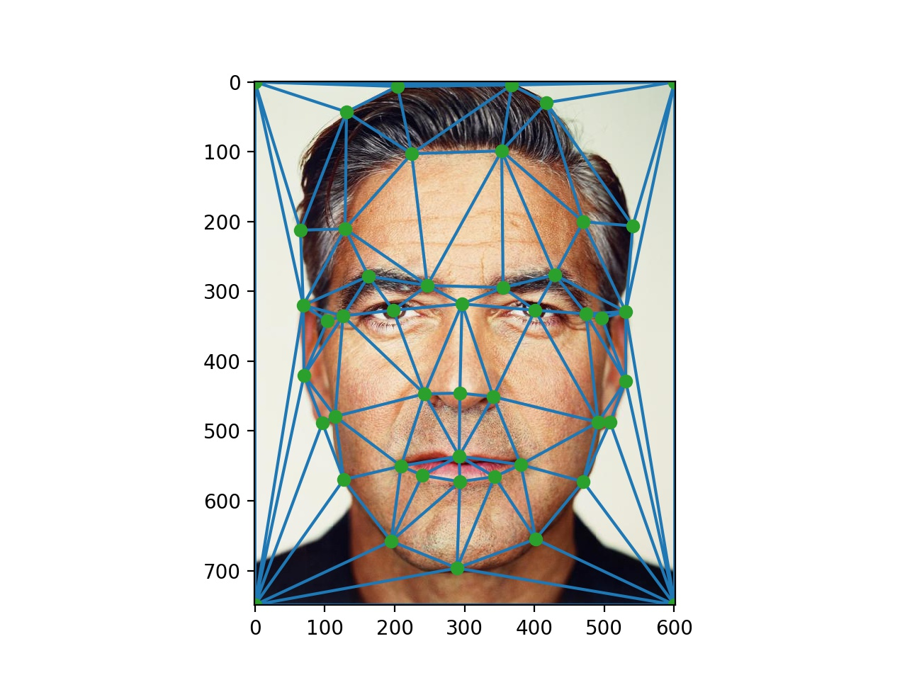
Triangulation of George's face
|
Transfer Local Contrast
We save our triangulations and points for future use. The next step, according to the paper, is to transfer the local contrast of the image. This local contrast is best seen in the lighting of the image. For example, in the George portrait, most of the light is towards the front of his face. The areas towards the ears and neck are darker.
Gaussian and Laplacian Stacks
To transfer the local contrast, we utilize Gaussian and Laplacian stacks. First, we decompose both images into Laplacian stacks,
where each level l is defined by this equation found in the paper:

Here, I is our input image, which corresponds to the picture we want to transfer the style to. The input to the Gaussian is a sigma value, and the x is a convolution operator.
Residual
We also extract the residual given a stack depth n, defined as

Energy Maps
From there, we compute the local energy as follows:
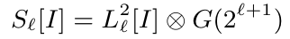
We then warp every level of our portrait energy stack to the shape of our input image, through the triangulation defined in the above section.
Gain Maps
At this point, we have energy stacks for both of our images, one for the original image, and one for the portrait warped into the shape of the original.
To transfer the energy over, we compute our output as follows, where is ouput image of the follow operation. S_tilde is our warped example portrait, and epsilon e is a small
number to avoid division by 0. In the paper, the recommended value for e was 0.0001:

The square root compensates for the square used to define for the energy.
Here, we have some levels of our energy stack images.
Energy stack images for Original Jose picture
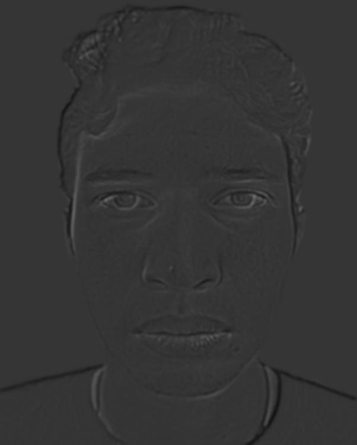
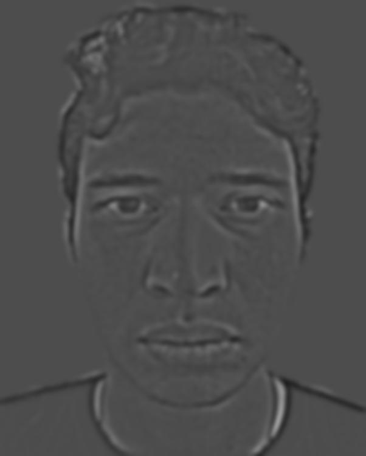
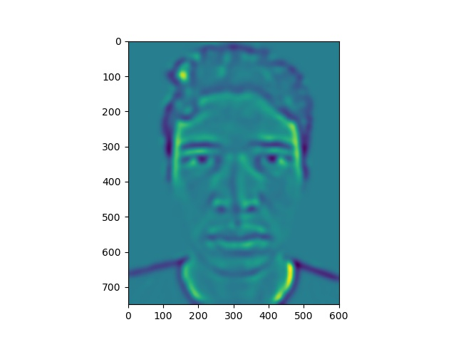
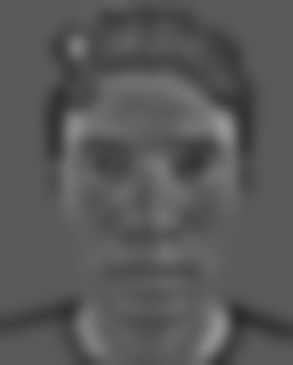
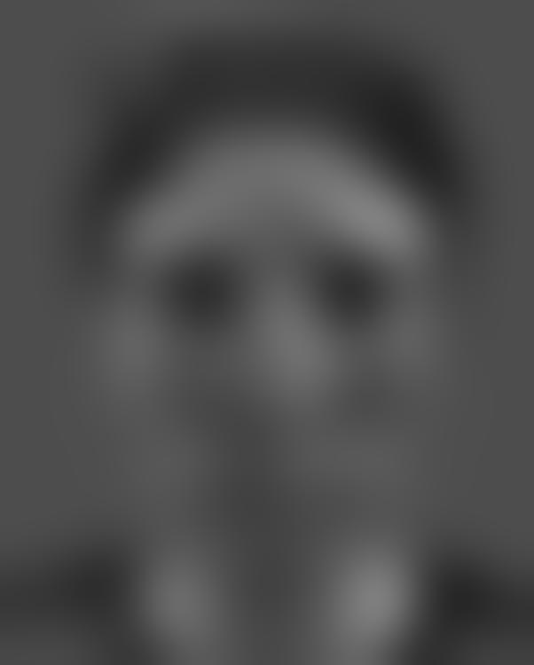
Energy stack images for Clooney picture
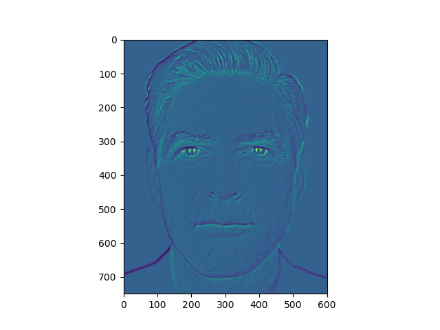
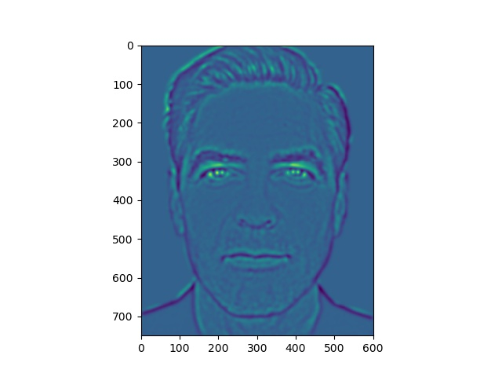
 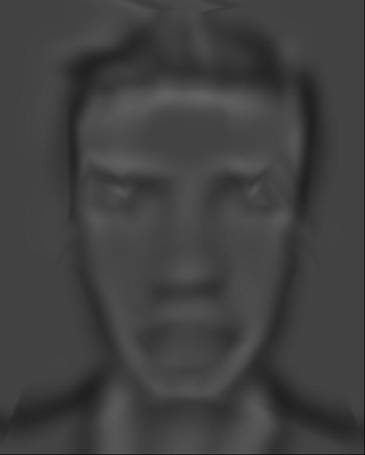
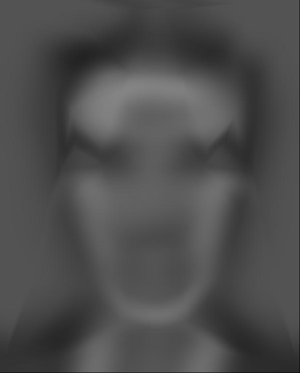
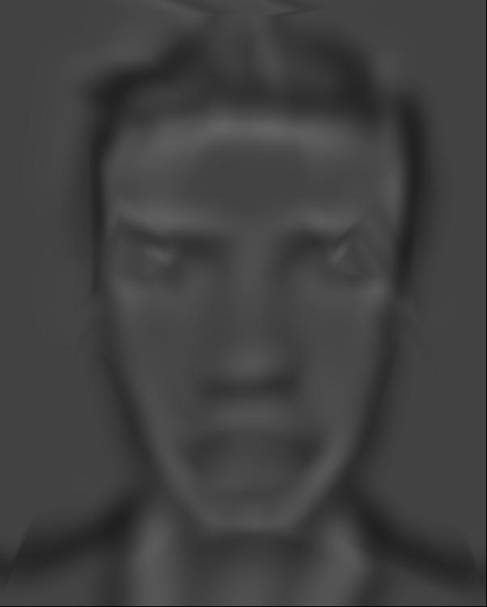
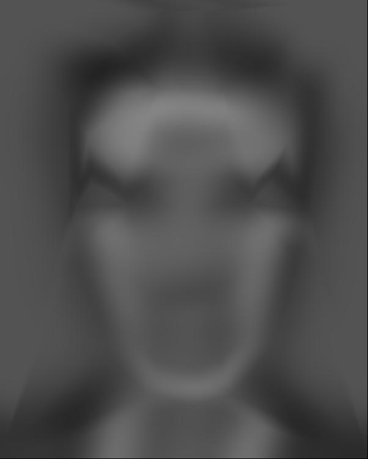
Our stacks span 6 levels, the number of levels used in the paper. We will come back to experiment with the stack depth. Also in the paper, the gain maps are clamped to avoid outliers. We also clamp the gain at a maximum of 2.8 and a minimum of 0.9, the values used in the paper, to have robust gain maps.
To get our final output image, we warp our example residual into the shape of our original photo and sum up our stack with this warped residual image.
Background
In the paper, the background was directly replaced. In the case that the head size didn't correspond, in which spaces need to be filled with the background, we used the OpenCV method inpaint. What inpaint allowed us to do was to fill in an area equal to the size of the head in the stylized photo, then use that entire image as the background. We first make a mask of the stylized portrait head, feed the result of removing that area from the whole image into inpaint. The following are the results.
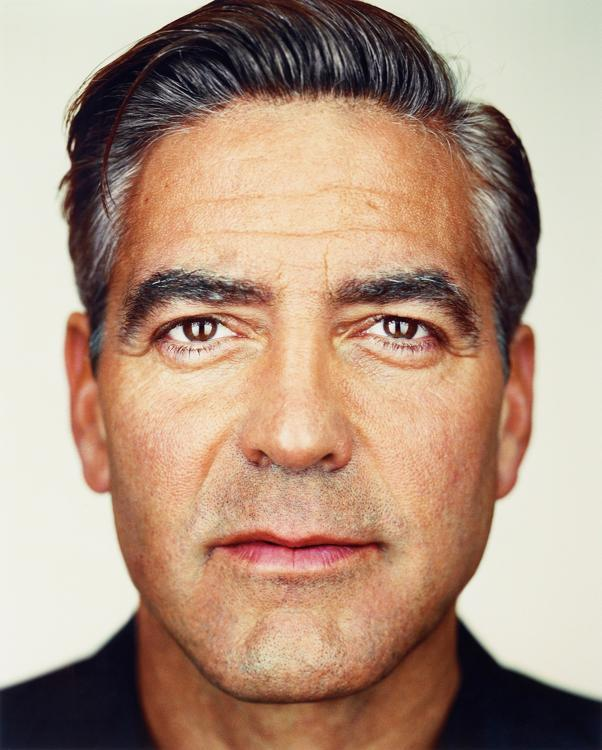


Weird artifacts are due to inaccuracies with the mask.
Results
Below, we have the results for transfering the style of Clooney's portrait to the original portrait of Jose. Here, we have original Jose, original George, and transferred Jose. We liked these results, as the lighting becomes balanced throughout Jose's face rather than bright on the right side only. In fact, the algorithm transfer a lot of the lighting, focused towards the front of the face. You can see that Jose's forehead is brighter than in the original image. However, the colors are not as bright as in Clooney's portrait,
but this can be attributed to Jose's image being much darker to start with, and our robust gain clamping the gain.
 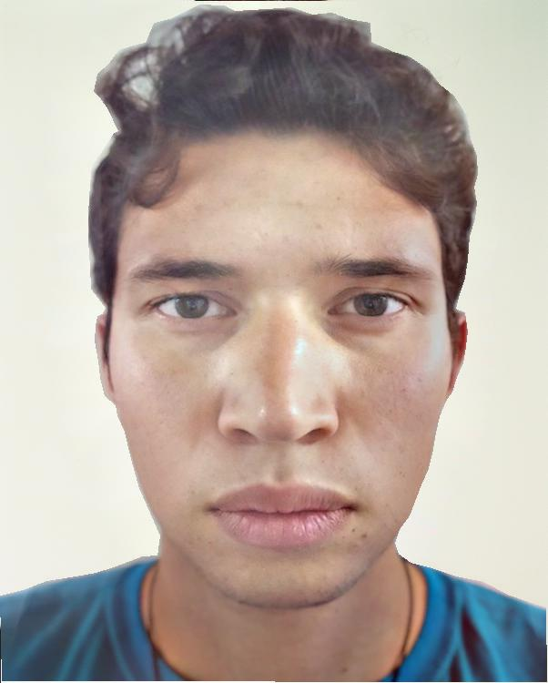
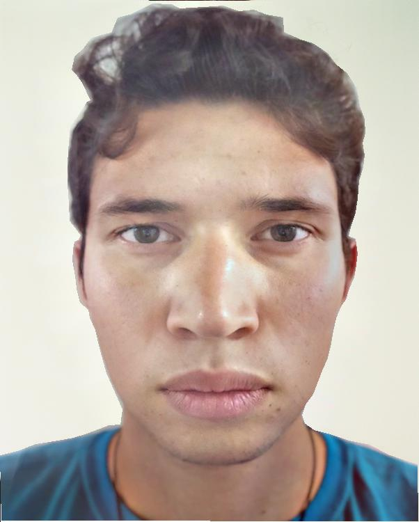
Deviations
Manual vs Automatic Correspondences
While their implementation did not specify how they defined correspondences, we chose to do this by using manually selected points for reasons specified above.
Using an automatic correspondence finder, we found that it did not match the face from above the forehead and outside the ears, so the warped face went beyond
our original face, resulting in odd blurs. Below are the comparisons.

Convolutions
The paper had a specific definition for applying a Gaussian convolution to an image. The paper defined it as follows:
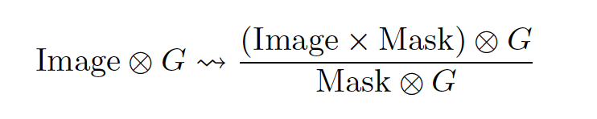
We tried this definition but unfortunately we could get this to work. The values outputted by this definition were in a very incompatible range, and our attempts to make it a compatible [0, 1] range failed. Therefore, we continued with regular convolution operations.
Masks
In the paper, we found that using masks gave us different results than not using binary masks for faces. Below,
we have our results without a binary face mask and with a binary face mask, respectively. We noticed that not using a mask transfered more of the background/ambient color of the stylized portrait into the face. Not applying the mask to the Laplacian stacks allowed more of the color surrouding the head to be considered for transfer. However, the image now appears too saturated compared to image that did use a mask.

Black and White Portraits
The paper demonstrated several examples in which they successfully transfered the style from a black and white portrait to an input image, the final result being in black and white. We tested our algorithm with a portrait of Chris Hemsworth. We repeated the earlier process by finding the manual correspondence points and feeding both images through the algorithm above. Below are the results.
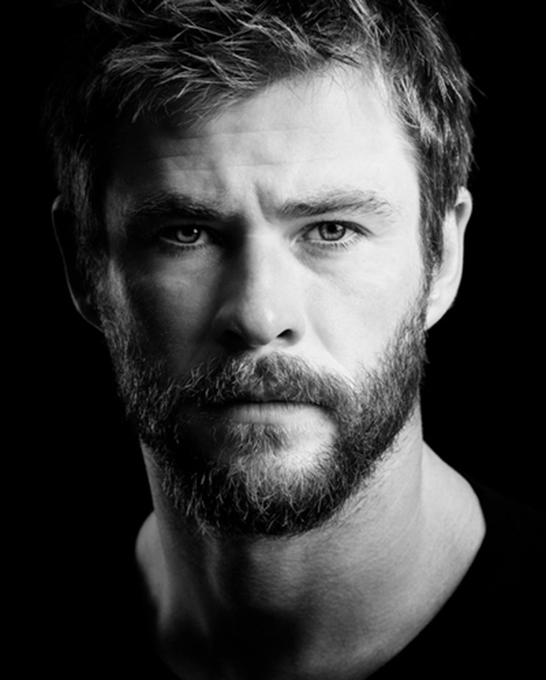
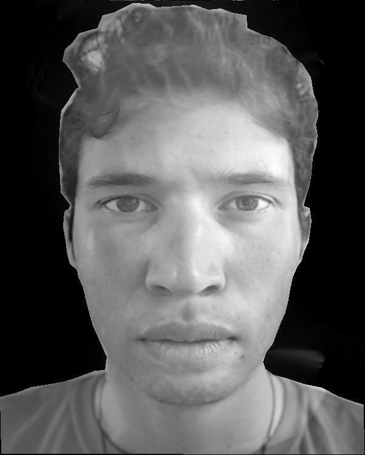
The third image is the result of using NO mask.
From this result, we can see that our implementation was able to transfer the lighting contrasts. For example, in the portrait, the light is strong on the left side of the face, with a dark contrast on the right. In our output picture, the lighting on the left side of the face expanded to a region that matches the lighting found on Chris' left half. Specifically, light can be found on the forehead of the outputted Jose portrait, but not in the original Jose portrait.
However, our result doesn't have the dramatic contrast found in the Chris portrait. Likewise, in the output picture, it appears slightly darker around the chin and along the sides of the face. This, we believe, is because our implemenation managed to treat the facial hair of Chris as a dark spot in the lighting. This is why the upper lip and chin in the output picture appear darker than the light on the left eye. We found this to be an interesting result, as we didn't anticipate the effects of facial hair. This effect was not explained or adjusted for in the paper.
To address the lack of dramatic contrast, we experimented with the clamping values. The results will be displayed in a further section. Below are the results with a mask.

The third image is the result of using a mask.
Clamping
Robust Gain and Convolution
In this section, we dicuss our observation with clamping gain values. According to the paper, "gain values below 1 mean a decrease of local contrast, and conversely, values greater than 1 mean an incrase." The paper defines a robust gain map that clamps high and low values:
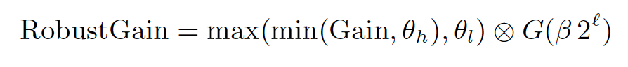
The paper defines theta_h = 2.8, theta_l = 0.9, Beta = 3
Values were clamped to avoid "phantom" effects. The clamping was done very fast by vectorizing our code.
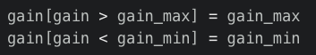
Notice that there is a convolution with a Gaussian at the end of clamping. The results we have obtained so far didn't use this convolution operator. This is because, when looking up the Matlab implementation found the paper's website, the code's implementation actually didn't include this convolution. Thus, we didn't technically include this descision as a deviation. However, we ran some tests using this convolution operator.
Below is the result of including the convolution at the end of clamping.
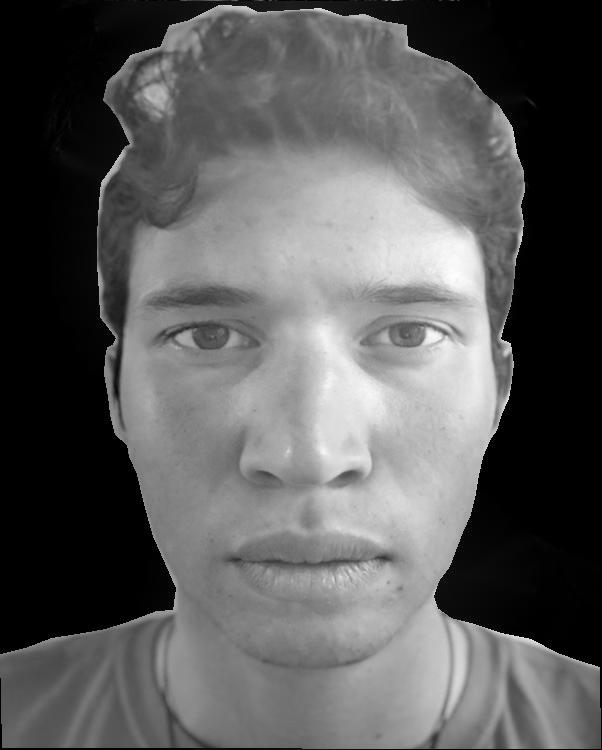
The third image is the result of applying a Gaussian convolution at the end of clamping.
Comparing both pictures.
The convolution at the end of clamping produced the right picture.
We found the convolution at the end of clamping to be less dramatic. For the rest of the results, we didn't include this final convolution operator.
Experimentation with Values
Using the intuition mentioned earlier, we experimented adjusting these clamping values. For the Jose and George picture, we tried to increase the contrast of the light by increasing the min and max gain values. Below is the result of a min gain of 1.1 and a max gain of 3.0:

The image on the right has a theta_h = 3.0, theta_l = 1.1.
To us, this was surprising. We expected the contrast to be better, since by increasing the min gain to be above 1 made us think that the lighting would be more dramatic. With the higher min and max gain values, a lot of the lighting transfer is gone. So since increasing the min gain didn't help, we tried decreasing the min gain back to 0.9. Below is the comparison.

The image on the right has a theta_h = 1.7, theta_l = 0.5.
Now we noticed no difference between the result with the higher max gain and the default max gain. After this, we decided to lower both numbers to 1.7 and 0.5:
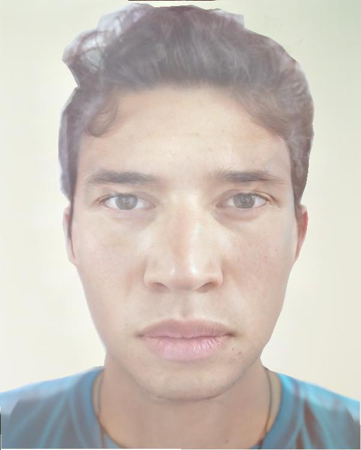
The image on the right has a theta_h = 1.7, theta_l = 0.5.
Lowering both the min gain and the max gain made the output image significantly more washed out. This result confused us because it seemed to go again the intuition that the paper mentioned, in which we expected that the higher values would make the lighting more dramatic. In addition, when we lowered the values, the image color was completely washed out. We unfortunately weren't able to come up with an explanation for these results and didn't find any useful information on this in the paper. For the rest of the project, we kept the min and max gain values as the default ones from the paper.
Experimental Results
The main goal of implementing this paper was to experiement transfering portrait styles from non-studio lighting scenarios. That is, in the paper and so far for this project, we have looked at transfering styles from a very stylized portrait, likely taken in an indoor studio with fancy lighting equipment. We came up with a new question: can we transfer styles from an indoor setting to an outdoor portrait and vice versa? Essentially, we tested our style transfer with non-stylized portraits and focused on natural environments. We aim to show the results, then discuss what transfered well and what didn't transfer well.
Below are two portraits in natural environments, one indoors and one outdoors respectively.
 Indoor environment
Indoor environment
|
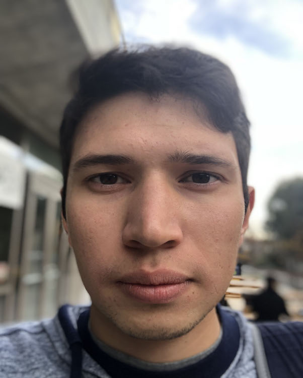
Outdoor environment
|
Indoor to Outdoor
We tested transfering the style of the outdoor portrait to the indoor portrait, replacing the background. Below are the results.
 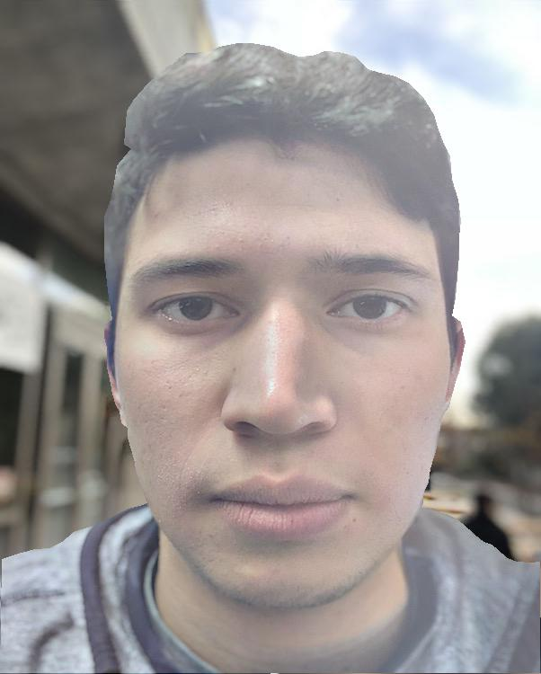
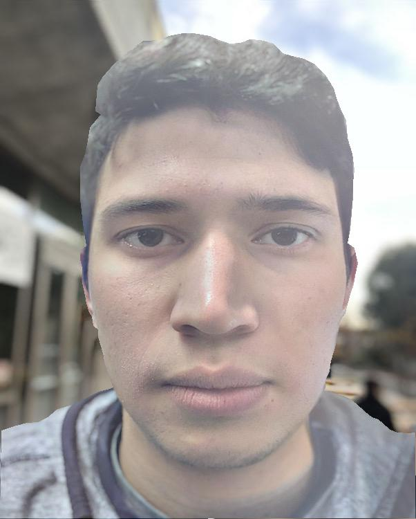
The third image is the result of using a mask.
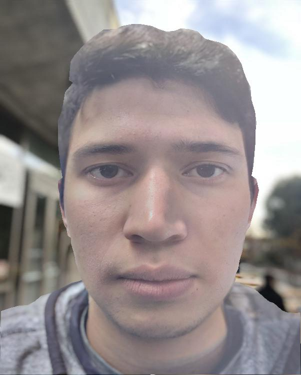
The third image is the result of using NO mask.
As before, our algorithm managed to transfer the very diffused lighting found outdoors to the face in the indoor picture. However, now our result look too washed out. We believe this is a result of our algorithm's clamping values and deviation from not blurring the mask in the laplacian stacks.
Outdoor to Indoor
Here are results from going from outdoor to indoor.

The third image is the result of using a mask.
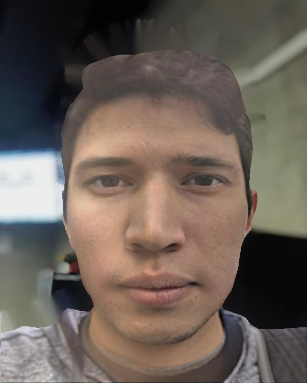
The third image is the result of using NO mask.
Overall, much of the very diffused outdoor lighting on the original outdoor image was replaced with the lighting found in the indoor picture. If you look closely, the right side of the face in the output picture matches the lighting of the original indoor picture. The result obtained from not using a mask had better color matching than the results obtained using a mask.
Day to Night
We also tried going from outdoor lighting to night lighting.
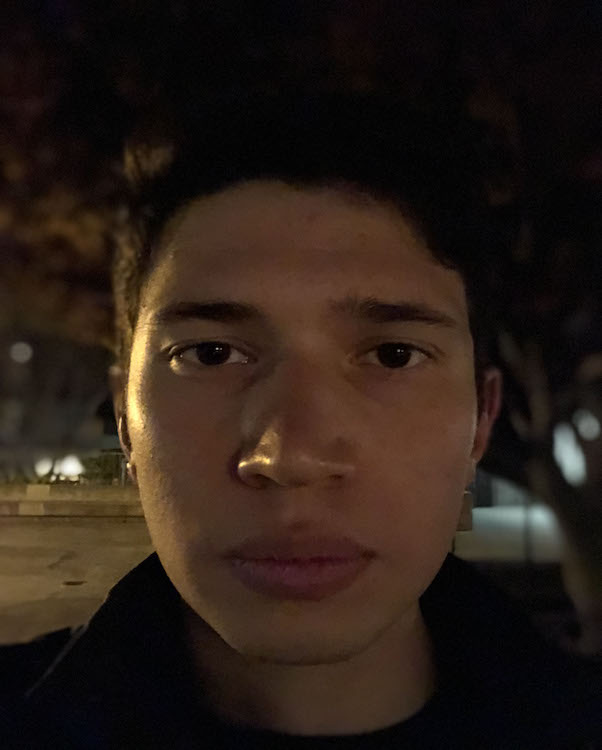
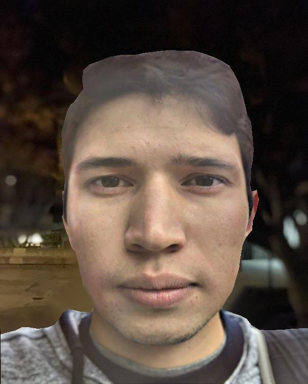
The third image is the result of using a mask.
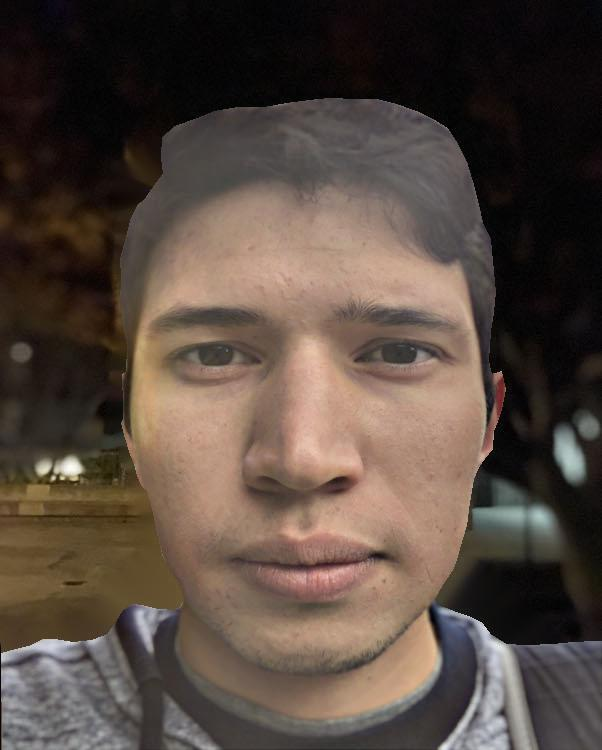
The third image is the result of using NO mask.
In general, the outdoor to night lighting experiment failed. One positive aspect is, in the result with no mask, the yellow highlight on the right side of the faces was transferred. But, our algorithm does not transfer color as well as local contrast.
Night to Day
Another combination is from night to daytime lighting.
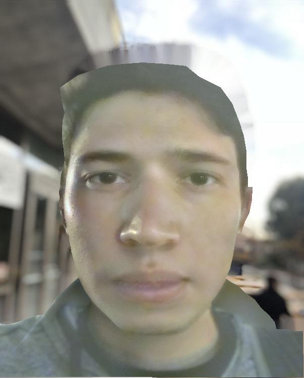
The third image is the result of using a mask.
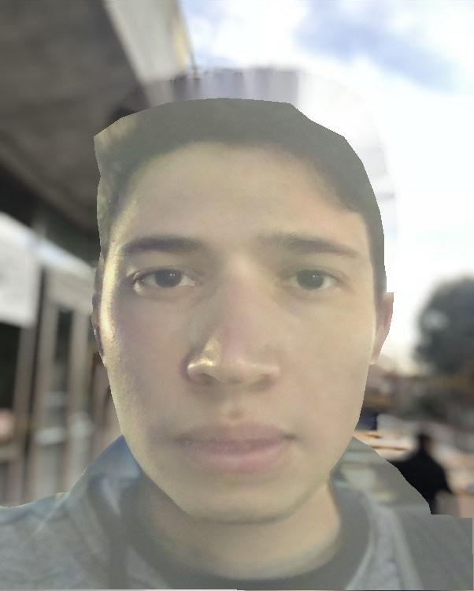
The third image is the result of using NO mask.
In general, a lot of our color could not be transfered like they were transfered in the paper. Taking into account implementation differences, we couldn't develop an explanation as to why we couldn't transfer color effectively. At this point, we thought that the differences in our implementation, such as the masked blurring, manual correspondence points, wouldn't affect the transfer of color. However, in the next section, we show the results of us using auto correspondence finding rather than manual.
Auto Finding Correspondences
Our more promising result from the indoor outdoor experiments came from using the OpenCV/dlib program mentioned earlier that automatically found dense correspondence point on the face. Below is the comparison of the results of going from indoor to outdoor.
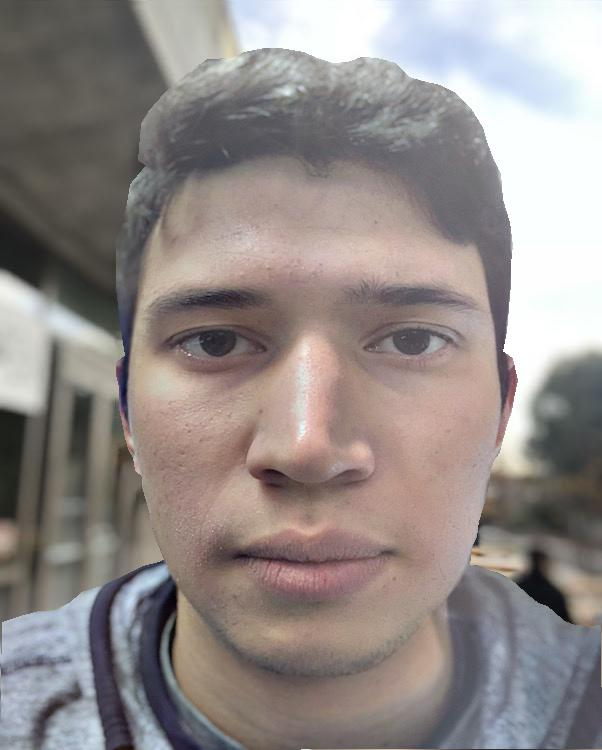
The image on the right was obtained using automatically found correspondence points by the OpenCV program and a mask
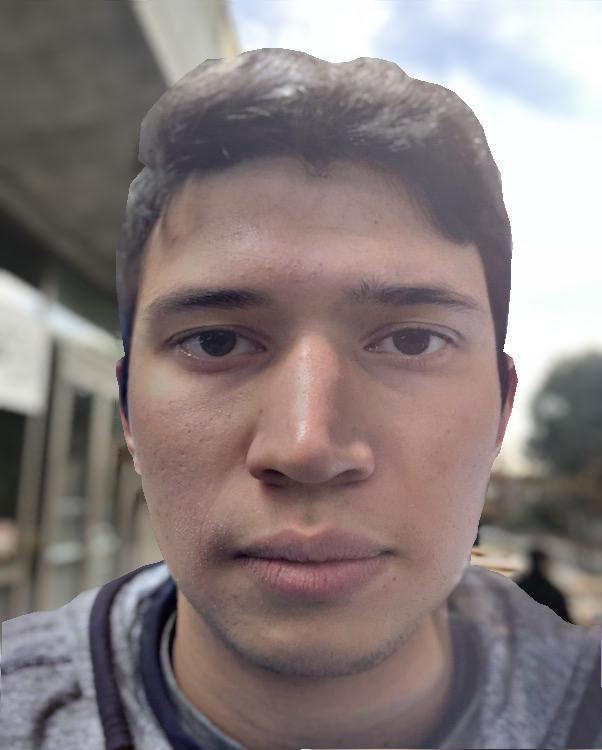
The image on the right was obtained using automatically found correspondence points by the OpenCV program and a mask